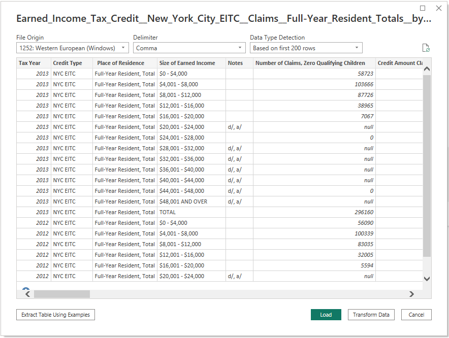
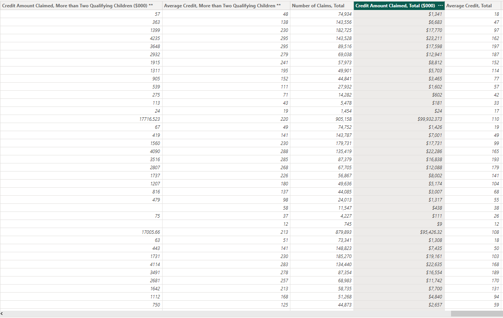

Examining NYC’s Earned Income Tax
Credit: A 10-Year Overview
Resources
Data source:
Earned_Income_Tax_Credit__New_York_City_EITC__Claims__Full-Year_Resident_Totals__by_Size_of_Earned_Income.csv
Software: Microsoft Power BI Desktop 2.116.622.0
Project Objective
Use
the provided csv file to create a dashboard to tell the best possible data driven story.
Processing and
Visualization
After inspecting the raw csv file, I connected it
to Power BI as a text file.

Upon careful inspection, I determined that the
majority of the data was imported without any issues. However, I did need to perform some data manipulation,
including the proper categorization of several columns and the implementation of comma separators to enhance
readability.

View the Dashboard on the Web
Drawing Insights
- With the exception of a dip in 2008, the
overall trend indicates a steady rise in the total number of claims filed, the total credit amount claimed,
and the total average credit, from 727,814 claims and $64,737 total credit amount claimed in 2004 to 916,857
claims and $103,266 total credit amount claimed in 2014, with the total average credit increasing from 89 in
2004 to 113 in 2014. The dip observed in 2008 may be attributed to the global financial crisis that occurred
during that time. The crisis had a profound impact on both individuals and families, as well as the economy
at large.
- The report includes a slicer located in the
top right corner that enables users to select a year of interest. Once selected, the top three charts will
update accordingly to provide insight into the relationship between income level brackets and earned income
tax credit (EITC) claim data.
- The first chart, positioned on the
left, displays the total number of claims versus income level brackets, with the $4,001-$8,000 and
$8,001-$12,000 brackets generally showing the highest number of claims overall. One possible reason
that these income level brackets generally show the highest number of claims overall is that these
income levels may be the most common among eligible taxpayers in the population. Additionally, the
Earned Income Tax Credit (EITC) is designed to provide assistance to low-to-moderate income working
individuals and families, and those falling into these income level brackets may be more likely to
qualify for the credit.
- The second chart, located in the
center, showcases the total credit amount claimed versus income level bracket, with the
$8,001-$12,000 and $12,001-$16,000 brackets generally displaying the highest total credit amount
claimed. Similar to the first chart, these brackets are in the low-to-moderate income range where
many individuals and families qualify for the earned income tax credit (EITC).
- Lastly, the third chart positioned on
the right illustrates the total average credit versus income level bracket, with the $12,001-$16,000
and $16,001-$20,000 brackets typically having the highest average credit. One possible reason is
that households within these income ranges may have higher numbers of qualifying dependents or may
have incurred higher expenses related to dependent care or work-related expenses, which can increase
the credit amount. Additionally, households in these income ranges may be more likely to have access
to tax preparation services that can help them maximize their credit eligibility.
Return to the Homepage